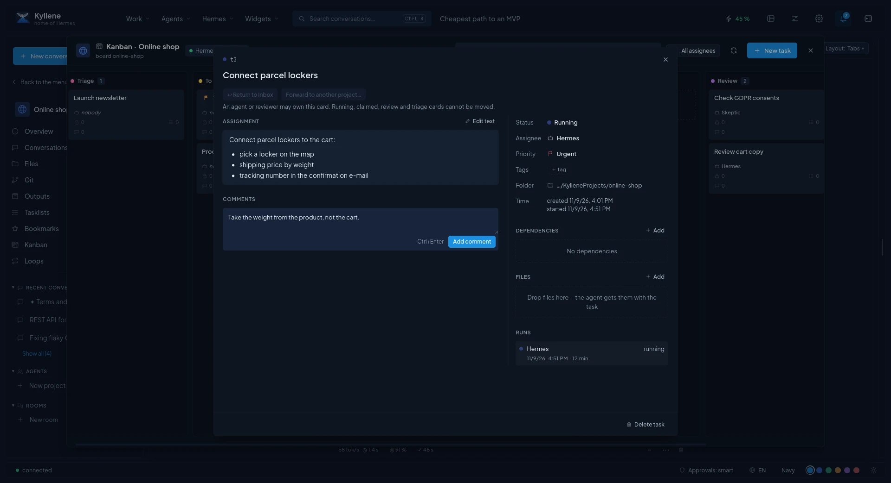

Kanban
Kanban hands work to agents. Each card is a task with an assignment; Hermes starts it with the agent (profile) you pick, the agent works in the background, asks when it is stuck, and you check the result. It uses Hermes' own Kanban boards, so the same cards are visible in Hermes' terminal and dashboard.

Boards
- Every project can have its own board (Kanban in the project's menu; Create board the first time). Agents working on its cards use the project folder, or their own copy of the project's code repository for coding roles (see Projects › Basics).
- The Inbox is the shared board for work that does not belong to a project yet. Anything you capture as a Kanban task lands there parked: nothing starts it on its own. To triage shows only open unassigned cards and cards returned from projects.
- Kanban in the left menu opens the boards; the palette has Kanban:
and New task in Inbox.
The header says whether Hermes runs tasks: cards are started by the Hermes gateway's dispatcher. If it says
tasks will not run, start the Hermes gateway (hermes gateway, or its service) with Kanban dispatch enabled.
Columns
| Column | Meaning |
|---|---|
| Triage | New ideas to sort out, not started. |
| To do | Planned work. An agent starts it only after you move it to Ready. |
| Scheduled | Waits for its time. |
| Ready | Hermes starts it with the assigned profile as soon as it can. |
| Running | An agent is working on it now; Hermes moves it when the agent finishes. |
| Blocked | The agent needs something: a question to you is marked and sorted to the top. |
| Review | Done by the agent, waits for your check. |
| Done | Finished. |
| Archived | Hidden from the board, kept with its history. Only finished cards can be archived; Restore brings one back. |
Drag a card to another column to change its state.
Working with cards
- New task: what should be done, details for the agent (Markdown), who works on it (a Hermes profile) and the priority. The card waits in To do until you move it to Ready.
- The card detail shows the assignment, the result, subtasks, comments, dependencies (cards it waits for) and every run. Open the run's progress follows the agent live; Separate window keeps the run next to the board; after the run you can Open as conversation and continue it.
- When the agent asks, the card shows the question with its choices: Answer and resume sends your answer and starts the card again. A comment you add is read by the agent on its next run.
- Process with … hands the card to a coding agent (Claude Code or Codex) in its own git worktree and branch; the card moves to Running and to Review when it finishes. Review with … lets another agent review that branch read-only and puts its findings into the comments. See Coding agents.
- Send to project… moves an Inbox card to a project board (parked, or to Triage to be split up); ↩ Return to Inbox sends it back.
- A tasklist task sent to Kanban (Send to Kanban in the tasklist) is ticked by itself once its card is finished.
Old cards
Archived cards are kept until you delete them: Delete older than … in the Archived column header for one board, or automatic clean-up for all boards in Settings › Automatic deletion (off by default).
Notifications about finished, blocked or failed cards: Settings › Notifications.